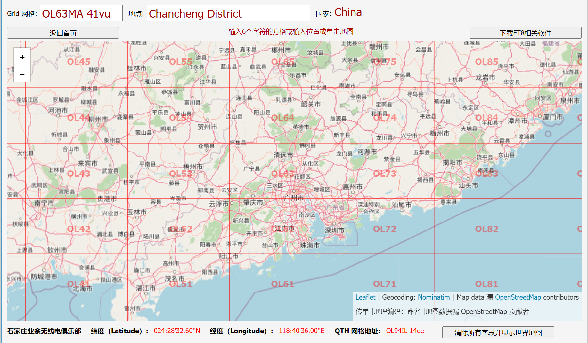
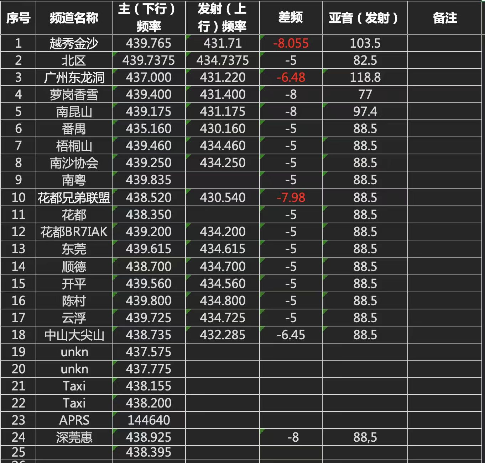

业余无线电笔记
梅登黑德坐标系统
梅登黑德定位系统（英语：Maidenhead Locator System）是以经纬度作为基准线，将地球分为若干网格，以实现精确报告自己位置的系统。该系统只需 4-6 个字符就可报出误差不超过 10km 的地球上任何地点。报出字符越长，精度越高。梅登黑德网格由大到小依次将地球分为“场”(field)、“方”(square)、“块”(subsquare)。
粗略的网格位置可用 4 个字符表示，如 上海 为“PM01”；比较精确的网格位置，则 可用 6 个字符表示，如 北京 为“OM89EV”。在 业余无线电 通讯中，一般只报告 4 位字符即可。
Maidenhead 在线查询 LO63MA

珠三角无线电中继
数据来源：http://weixin.cqcqcq.cn/index.php?m=radio&c=map&a=citylist&province_id=6
在 广东佛山（112，23）LO63MA 处测试
TFTC（Too far to connect）：表示测试点距离中继太远无法连接，但是可以听见中继下行，判断出中继正常运行。
IVL（invalid）：中继暂时失效，曾经正常使用过。
佛山
-
- 佛山 1 (FS1 650),439.65,-5(下差),434.65,模拟发射亚音 88.5
-
- 佛山 2 西樵 (FS2 125),439.125,-5.015(下差),434.11,模拟发射亚音 88.5
-
- 佛山 3 (FS3 900),439.9,-5(下差),434.9,模拟发射亚音 88.5
-
- 佛山 BR7IAB (FS4 680),439.68,-5(下差),434.68,数字发射和接收亚音 73
- 佛山禅城 IVL (FSCZ 315),439.315,-8(下差),431.315,模拟发射和接收亚音 88.5
-
- 高明 (GM 830),438.83,-5(下差),433.83,模拟发射亚音 88.5
-
- 顺德 (SD 700)438.7,-5(下差),433.7,模拟发射亚音 88.5
-
- 顺德 (SD 600),439.6,-5(下差),434.6,模拟发射亚音 88.5
-
- 顺德 (SD 300),439.3,-5(下差),434.3,模拟发射亚音 88.5
-
- 顺德 BR7IAN (SD IAN),439.97,-5(下差),434.97,模拟发射亚音 88.5
链路中继：
-
- 狮山 (SS 615),438.615,-6(下差),432.615,模拟发射亚音 88.5
-
- 中山南头 (ZSNT),438.735,-6.45(下差),432.285,模拟发射亚音 88.5
- 东莞桥头 TFTC (DGQT),439.75,-6(下差),433.75,模拟发射亚音 94.8
-
- 中山火炬实验 A TFTC (ZSHJ A),439.9375,-8(下差),431.9375,模拟发射亚音 88.5
-
- 南昆山 (NKS 175),439.175,-8(下差),431.175,模拟发射和接收亚音 97.4
-
- 博罗龙溪 (BLLX 520),439.52,-5(下差),434.52,模拟发射和接收亚音 88.5
广州
-
- 越秀 (GZYX 765),439.765,-8.055(下差),431.71,模拟发射亚音 103.5
- 广州,439.35,-5(下差),434.35,模拟发射亚音 88.5
深圳
-
- 梧桐山中继 (SZWTS 460),439.460,-5(下差),434.460,模拟发射和接收亚音 88.5
江门爱好者
中继更新频率 438.425 -7.05M{即 431.375 ）收发哑音 88.5。DMR 参数色 1，时隙 1，全呼，顺德大良中继（链路）437.400 -7M，收发哑音 97.4 同步滔滔房间 143278.南山 531029.顺德中继 439.425 一 9M，收发哑音 110.9 。
cq cq cq，这里是中山市业余无线电阜沙大队应急通讯电台。频率 437.4375 下差 6.8:，发射亚音 88.5:， 同步滔滔链路 256657。欢迎广大 HAM 友上台通联，靓靓 73 送上。
-
- 江门 Ham (JM 425),438.425,-7.05,431.375,收发哑音 88.5 DMR 色 1 时隙 1 全呼
-
- 顺德<->江门 (SD T JM), 439.425,-9,430.425,收发哑音 110.9
Order
-
- 珠海斗门 (ZHDM 690),436.690,-6.5,430.190,亚音 71.9
-
- 江门新会 (JMXH),437.4,-7,430.4,亚音 88.5
-
- 东莞 (DG 850),439.85,-5,434.85,亚音 118.8
-
- 中山小榄 (ZSXN),438.3625,-5,433.3625,收发亚音 88.5
-
- 江门鹤山 (JMKS 900),439.900,-5,434.900,亚音 88.5
ba7mcg 两年前自己整理

业余卫星通联
ISS
SO-50
AO-91
AO-92
AO-27
PO-101
Catalogue number,Display name,Rx,Tx,CTCSS,ArmCTCSS
22825U,AO27,436795000,145850000,0,0
43017U,AO91,145960000,435250000,670,0
43137U,AO92,145880000,435350000,670,0
40908U,CAS3H,437200000,144350000,0,0
40931U,IO86,435880000,145880000,885,0
43678U,PO101,145900000,437500000,1413,0
25544U,ISS,437800000,145990000,670,0
27607U,SO50,436795000,145850000,670,744
54684U,FO118,435600000,145925000,670,0
OpenGD77配置自定义卫星satellites.txt
http://dtrac.cn/viewtopic.php?t=41
在文件 satellites.txt 中定义卫星，导入和上传到电台，该文件随 CPS 安装到其安装目录中。该文件是标准格式的 CSV 文件，包含卫星目录号，以及无线电中的显示名称，以及 Tx、Rx 频率和 Tx CTCSS 以及使用“Arming”的卫星的“Arming”CTCSS “ 信令。操作员可以根据需要编辑此文件以添加或删除卫星。可加载到电台的最大卫星数量为 15 颗。下面提供集成 CSS（中国空间站）的参数，解压缩后将 satellites.txt 覆盖到 CPS 安装目录。
Catalogue number,Display name,Rx,Tx,CTCSS,ArmCTCSS
22825U,AO27,436795000,145850000,0,0
43017U,AO91,145960000,435250000,670,0
43137U,AO92,145880000,435350000,670,0
40908U,CAS3H,437200000,144350000,0,0
40931U,IO86,435880000,145880000,885,0
43678U,PO101,145900000,437500000,1413,0
25544U,ISS,437800000,145990000,670,0
25544U,ISS SSTV,145800000,0,0,0
27607U,SO50,436795000,145850000,670,744
54684U,FO118,435600000,145925000,670,0
25338U,NOAA 15,137500000,0,0,0
28654U,NOAA 18,137912500,0,0,0
33591U,NOAA 19,137100000,0,0,0
https://www.celestrak.com/NORAD/elements/amateur.txt
http://www.dtrac.cn/download/active
卫星论坛：
http://dtrac.cn/viewtopic.php?t=41
BG1ICA
业余无线电 SDR 方面的博主
https://pan.baidu.com/s/1XG0oxSwknUvNt8WO5vHf7Q?pwd=74u6#list/path=%2F
各国免执照频率&VHF 海事频道一览
https://blog.zqlucifer.com/archives/978